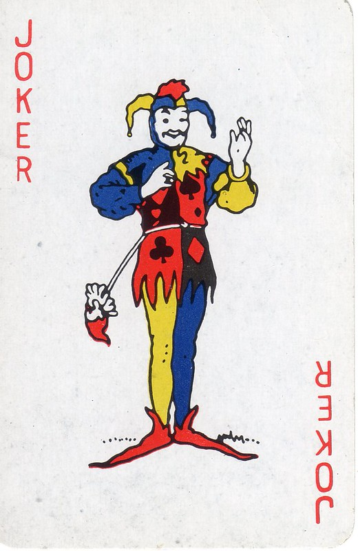

Hi my name is Pellynator63 and i am a scientist. I love observing the beings and creatures in my land because theres no one like me. today ill be observing the millywunk. its a shy creature that only comes at night so it can avoid the music and people. to avoid scaring it away, i turn invisible whenever it arrives so it doesnt know im there.
